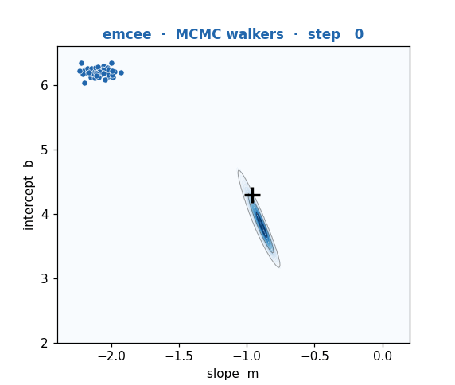
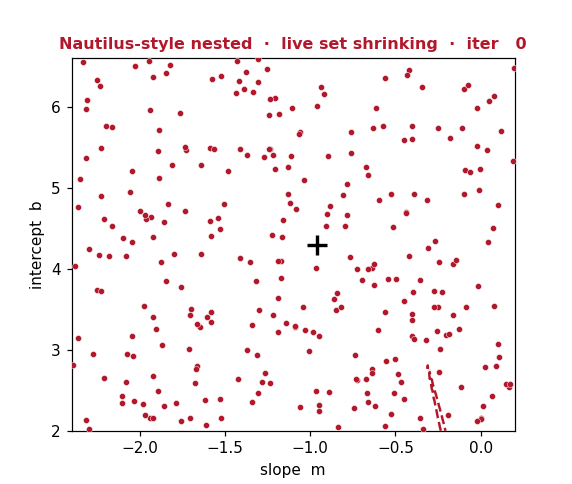
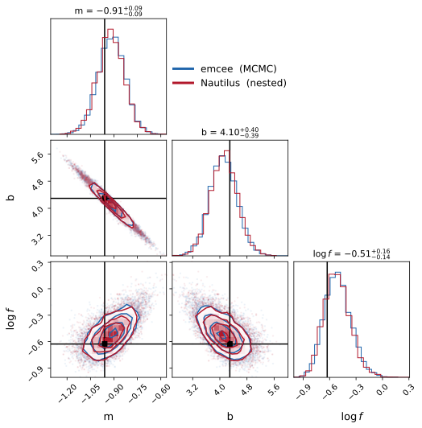

TDMMA-2026 · Workshop Takeout
Two Ways to Fit a Model
Bayesian MCMC vs Nested Sampling
...and how to read the corner plot that both of them give you
Deba Priyo Guha
Center for Astronomy, Space Science & Astrophysics (CASSA) · Independent University, Bangladesh
Arrow keys to navigate · F for fullscreen · Esc for overview
Same question, two engines
Two Ways to the Same Posterior
We want the full posterior, not one number: the cloud of values the data allow.
| emcee MCMC | Nautilus Nested |
|---|
| Idea | Walkers random-walk the posterior. | Live points peel inward from the prior. |
| Gives | Samples. | Samples + evidence Z. |
| Best for | Smooth, single-peak. | Weird / multi-peak; model comparison. |
Key point: same data must give the same posterior. Disagreement = a bug, not a choice.
Watch it happen — live simulation
The Two Engines in Motion

emcee — walkers start in a blob, then random-walk until they fill the posterior.

Nautilus-style nested — live points peel inward; grey = discarded shells, crimson = the shrinking live set.
Two paths, one destination: the walkers fill the good region from inside; the live set squeezes onto it from outside. Both end on the same tilted m–b blob.
The one plot you must be able to read
How to Read a Corner Plot
- Diagonal = each parameter's answer. Width = its uncertainty (16/50/84% on top).
- Off-diagonal = a pair together. Contours = 1σ, 2σ.
- Tilted blob = correlation. Here m up ⇒ b down: a degeneracy.
- Round blob = independent.
- Crosshairs = the truth.
In short: narrow & round = clean; wide & tilted = uncertain and tangled.

Same corner, both engines overlaid.
Demo — live, run in the sc environment
Same Data → Same Answer
■ emcee ■ Nautilus · fitting a straight line with intrinsic scatter
y = m·x + b (+ scatter log f)
50 points · uniform priors · same model
| emcee | Nautilus |
|---|
| m (−0.96) | −0.91 ±0.09 | −0.92 ±0.09 |
| b (4.29) | 4.10 ±0.40 | 4.13 ±0.39 |
| log f (−0.63) | −0.51 ±0.15 | −0.52 ±0.15 |
| extra | 6s · τ≈38 | log Z = −40.4 |
Takeaway: two very different algorithms, one posterior. Nautilus adds the evidence Z for model comparison.